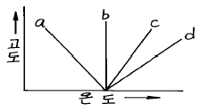
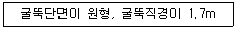

대기환경산업기사 (2003-08-31 기출문제)
1과목: 대기오염개론
1. 소용돌이 확산모델(Eddy diffusion model)의 기본방정식으로 적절한 것은?
- Hook's 방정식
- Fick's 방정식
- Plank's 방정식
- Kelvin's 방정식
(정답률: 알수없음)

2. 고온의 연소과정에서 화염속에서 주로 생성되는 질소산화물은?
- NO
- NO2
- NO3
- N2O5
(정답률: 알수없음)
3. 다음 도면은 기온구배를 4종류 나타낸 것이다. 이 가운데 매연의 확산폭이 가장 큰 기온 구배는?

- a
- b
- c
- d
(정답률: 알수없음)
4. 세류현상(Downwash)을 방지하기 위해서 굴뚝 배출구의 가스유속을 풍속보다 최소한 몇배 이상 높게 유지하여야 하는가?
- 1.5배
- 2배
- 2.5배
- 3배
(정답률: 알수없음)
5. 로스앤젤러스 스모그에 관한 설명으로 알맞지 않은 것은?
- 2차 오염물질
- 침강성 역전
- 광화학반응
- 겨울
(정답률: 알수없음)
6. "상자모델"이론을 전개하기 위하여 설정된 가정이 아닌것은?
- 오염물 분해는 일차반응에 의한다.
- 오염물 공간확산속도는 오염물 배출시간 및 농도에 비례한다.
- 오염물배출원이 지면전역에 균등히 분포되어 있다.
- 고려된 공간에서 오염물의 농도는 균일하다.
(정답률: 알수없음)
7. "환경감율"의 정의로 가장 알맞은 것은?
- 건조공기의 수직온도 변화비율
- 역전층에서의 수직온도 변화비율
- 대기층에서의 실측 수직온도 변화비율
- 과단열 조건에서의 수직온도 변화비율
(정답률: 알수없음)
8. 다음 식물들 중에서 불소화합물의 지표식물과 가장 거리가 먼 것은?
- 옥수수
- 자두
- 메밀
- 목화
(정답률: 알수없음)
9. 우리나라에서 인위적인 대기오염물질의 년간 총발생량중 가장 많은 부분을 차지하는 물질은?
- 아황산가스(SO2)
- 암모니아(NH3)
- 먼지(TSP)
- 탄화수소(HC)
(정답률: 알수없음)
10. 배출구에서 연속적으로 배출되는 대기오염물질이 바람에 의해서 직접 희석되는 경우에 오염물질의 공간농도변화에 대하여 올바른 설명은?
- 풍속이 2배가 되면 공간농도는 1/2배가 된다.
- 풍속이 2배가 되면 공간농도는 1/4배가 된다.
- 풍속이 2배가 되면 공간농도는 1/6배가 된다.
- 풍속이 2배가 되면 공간농도는 1/8배가 된다.
(정답률: 알수없음)
11. 자동차의 크랑크 케이스(blow by)에서 가장 많이 배출되는 가스는?
- 탄화수소
- 황산화물
- 일산화탄소
- 부유물질
(정답률: 알수없음)
12. 지구 지표면의 열수지를 표현하기 위해 복사수지식을 적용하는데 다음에서 지표의 반사율을 나타내는 지표는? (단, 입사에너지에 대하여 반사되는 에너지의 비)
- 유효율
- 알베도
- 복사도
- 일사도
(정답률: 알수없음)
13. 광화학 스모그 발생시 산화물의 농도에 미치는 인자와 가장 거리가 먼 것은?
- 대기 고도
- 반응물 양
- 빛의 강도
- 대기 안정도
(정답률: 알수없음)
14. 비스코스 섬유제조시 주로 발생하는 무색의 유독한 휘발성 액체이고, 그 불순물은 불쾌한 냄새를 내는 대기오염물질은?
- 포름알데이드(HCHO)
- 이황화탄소(CS2)
- 암모니아(NH3)
- 일산화탄소(CO)
(정답률: 알수없음)
15. 휘발유 자동차의 배출가스를 저감하기 위한 삼원촉매장치에서 환원촉매로 사용하는 것은?
- Pt
- Pd
- Rh
- Pb
(정답률: 알수없음)
16. 실제굴뚝고가 40m, 굴뚝내경 6m, 굴뚝가스 배출속도 15m/s, 굴뚝주위의 풍속이 5m/s 이라면 유효굴뚝높이는? (단, Δ H = (1.5Vs× D)/U 를 이용하라.)
- 57 m
- 67 m
- 87 m
- 97 m
(정답률: 알수없음)
17. 굴뚝에서 배출되어지는 연기의 모양과 대기상태를 설명한 것 중 환상형(looping)에 관하여 맞는 것은?
- 상층이 불안정하고 하층이 안정할 경우에 나타나며, 연기가 서서히 확산된다.
- 전체 대기층이 중립일 경우에 나타나며, 연기모양의 요동이 적은 형태이다.
- 전체 대기층이 강한 안정시에 나타나며, 지상에는 오염물질의 영향이 매우 크다.
- 전체 대기층이 불안정할 경우에 나타나며, 연기의 모양이 상하로 요동이 심하며, 순간적으로 지상에 고농도가 될 수 있다.
(정답률: 알수없음)
18. 열섬효과(heat island effect)에 대한 설명으로 틀린것은?
- 도시 외곽지역에서는 도시중심지역에 비하여 고온의 공기층을 형성하게 되는데 이를 열섬(heat island)현상이라 한다.
- 도시지역과 교외지역은 풍속이나 대기안정도의 특성이 서로 다르고, 열섬의 규모와 현상은 시공간적으로 다양하게 나타난다.
- 열섬현상의 원인으로서는 인공열 발생증가, 건물 등 구조물에 의한 거칠기 변화, 지표면에서의 증발잠열 차이 등이다.
- 도시지역에서의 풍속은 교외지역에 비하여 평균적으로 25~30% 감소하며, 대기오염물질이 응결핵으로 작용하여 운량과 강우량의 증가 현상이 나타날 수있다.
(정답률: 알수없음)
19. 분진농도가 160㎍/m3이고, 상대습도가 70%인 상태의 대도시에서의 가시거리는 몇 km인가? (단, A=1.2)
- 4.5km
- 5.5km
- 6.5km
- 7.5km
(정답률: 알수없음)
20. 무차원수이며 근본적으로 열적난류를 기계적인 난류로 전환시키는 율을 측정한 것으로 지구경계층에서의 기류안정도를 나타내는 척도로 이용하고 있는 것은?
- 레이놀드수
- 리차드슨 수
- 항력계수
- 커닝험 계수
(정답률: 알수없음)
2과목: 대기오염 공정시험 기준(방법)
21. 흡광광도법의 설명 중에서 입사광의 강도를 Io, 투사광의 강도를 It 라 하면 흡광도 A 는?
- A = (It/Io) × 100
- A = (Io/It) × 100
- A = log(It/Io)
- A = log(Io/It)
(정답률: 알수없음)
22. 다음 물질중 공정시험방법상 원자흡광광도법과 흡광광도법을 동시에 적용할수 없는 것은?
- 카드뮴 화합물
- 크롬 화합물
- 구리 화합물
- 페놀 화합물
(정답률: 알수없음)
23. 환경대기중의 옥시탄트(O3)의 수동측정방법은 중성요오드화 칼륨법과 알칼리성 요오드화 칼륨법이 있다. 중성요오드화 칼륨법의 오존측정범위기준으로 맞는 것은?
- 0.1 ~ 10ppm
- 0.5 ~ 20ppm
- 0.01 ~ 10ppm
- 0.⑤ ~ 20ppm
(정답률: 알수없음)
24. 굴뚝 배출가스의 유속을 구하기 위하여 피토우관으로 측정하니까 유속은 12m/sec였다. 이 때의 동압은? (단, 피토우관의 계수는 1, 습식배기가스의 단위체적당 질량을 1.2kg/m3로 한다)
- 15.5 mmH2O
- 10.6 mmH2O
- 8.8 mmH2O
- 6.2 mmH2O
(정답률: 알수없음)
25. 굴뚝에서 배출되는 가스 중 황화수소를 분석하기 위한 흡수액을 제조할 때 사용되는 시약이 아닌 것은? (단, 흡광광도법 )
- 황산아연
- 수산화칼륨
- 수산화나트륨
- 황산암모늄
(정답률: 알수없음)
26. 배출가스중의 질소화합물(NO + NO2)등 분석하는 방법 중 페놀디술폰산법으로 측정할 때 시료가스의 흡수액은?
- 암모니아수
- 수산화나트륨 용액
- 붕산 용액
- 황산+과산화수소수
(정답률: 알수없음)
27. 가스 100mℓ 중의 성분 중량이나 용액 100mℓ 중의 성분 중량은 다음 중 어느것으로 표시하는 것이 옳은가?
- W/V %
- V/V %
- V/W %
- W/W %
(정답률: 알수없음)
28. 비분산 적외선 분석법에 관한 설명으로 틀린 것은?
- 비선택적 검출기를 이용하여 적외선반사량 및 흡수량의 비율을 측정하여 시료중 성분을 구하는 방법이다.
- 적외선 가스분석계는 고정형과 이동형으로 분류한다.
- 분석계는 일반적으로 적외선 광원, 회전섹터, 광학필터, 시료셀, 비교셀, 적외선검출기, 증폭기 및 지시계로 구성된다.
- 광원은 원칙적으로 니크롬선 또는 탄화규소의 저항체에 전류를 흘려 가열한 것을 사용한다.
(정답률: 알수없음)
29. 표준상태하에서 물 1g을 수증기로 만들때 부피는?
- 1.12ℓ
- 1.24ℓ
- 1.32ℓ
- 1.38ℓ
(정답률: 알수없음)
30. 다음 조건에서 먼지를 측정하기 위한 측정점수로 적절한 것은?

- 3
- 4
- 6
- 8
(정답률: 알수없음)
31. 단면이 정방형인 연도를 등면적의 4구분으로 나누어 먼지를 측정하였다. 각 구분면의 유속은 각각 4.8, 5.0, 5.2, 4.5 m/sec 이며 그 구분에 대응하는 분진농도는 각각 0.55, 0.50, 0.48, 0.52g/sm3이었다. 이 때 총평균 먼지 농도는?
- 0.544g/sm3
- 0.534 g/sm3
- 0.529 g/sm3
- 0.512 g/sm3
(정답률: 알수없음)
32. 환경대기 중 먼지를 측정하는 주 시험방법은?
- 하이볼륨에어샘플러법(자동)
- 로우볼륨에어샘플러법(수동)
- 하이볼륨에어샘플러법(수동)
- 로우볼륨에어샘플러법(자동)
(정답률: 알수없음)
33. 환경대기중의 아황산가스 측정방법 중 자동연속측정법이 아닌 것은?
- 용액 전도율법
- 자외선 형광법
- 비분산적외선법
- 불꽃광도법
(정답률: 알수없음)
34. 다음 내용 중 틀린 것은?
- 시험에 사용하는 시약은 규정이 없는 한 특급 또는 1급이상의 것을 사용하여야 한다.
- '약'이란 그 무게 또는 부피에 대하여 ± 5% 이상의 차가 있어서는 안된다.
- 방울수라 함은 20℃에서 정제수 20방울을 떨어뜨릴때 그 부피가 약 1mL되는 것을 뜻한다.
- 시험에 사용하는 물은 따로 규정이 없는 한 정제증류 수 또는 이온교환수지로 정제한 탈염수를 사용한다.
(정답률: 알수없음)
35. 다음중 원자흡광 광도법에서 분석오차를 유발하는 요인과 가장 거리가 먼 것은?
- 분무기 또는 버어너의 열화(劣化)
- 공존물질에 의한 간섭
- 광원부와 파장선택부의 광학계의 조정 불량
- 분석시료의 처리방법과 희석의 부적당
(정답률: 알수없음)
36. 다음은 분석대상가스별 분석방법이 적절치 못한 것은?
- 페놀 - 4아미노안티피린법
- 벤젠 - 메틸에틸케톤법
- 염화수소 - 오르토톨리딘법
- 포름알데히드 - 크로모트로핀산법
(정답률: 알수없음)
37. 자동기록식 광전분광 광도계의 파장교정에 사용되는 흡수 스펙트럼은?
- 홀뮴유리
- 석영유리
- 플라스틱
- 방전유리
(정답률: 알수없음)
38. 다음 중 아연환원 나프틸 에틸렌 디아민법에 의한 굴뚝 가스중의 질소산화물 분석조작을 가장 올바르게 설명한 것은?
- 시료채취 – 오존산화 - 아연분말로 환원 - NEDA 반응 - 흡광도 측정
- 시료채취 - 아연분말로 환원 – 오존산화 - NEDA 반응 - 흡광도 측정
- 시료채취 – 오존산화 - NEDA 반응 - 아연분말로 환원 - 흡광도 측정
- 시료채취 - 아연분말로 환원 - NEDA 반응 – 오존산화 - 흡광도 측정
(정답률: 알수없음)
39. 질소산화물 측정법중 페놀디술폰산법에서 질소산화물의 농도 계산식은? (단, Vs : 시료가스채취량(㎖,0℃,1기압), n : 분석용 시험용액의 희석배수, V : 검량선으로 부터 구한 질소화합물(㎖), C :질소화합물의 농도(V/V ppm))
- C = 1,000nV / Vs
- C = 10,000nV / Vs
- C = 100,000nV / Vs
- C = 1,000,000nV / Vs
(정답률: 알수없음)
40. 공정시험방법상 따로 규정 없이 단순히 '염산(HCl)'이라 표시된 경우에 뜻하는 농도는? (단, 따로 규정이 없는 경우, 비중은 1.18 )
- 35.0~37.0% 이상
- 55.0~58.0% 이상
- 95% 이상
- 98% 이상
(정답률: 알수없음)
3과목: 대기오염방지기술
41. 기체연료의 특징으로 가장 알맞는 것은?
- 저장이 용이하다.
- 연료속에 황이 포함되지 않은 것이 많다.
- 연소의 조절, 점화 및 소화과정이 복잡하다.
- 연소효율은 높으나 완전연소를 위한 많은 과잉공기가 필요하다.
(정답률: 알수없음)
42. 직경 10cm 이고 길이가 1m 인 원통형 집진극을 가진 전기집진 장치에서 처리되는 가스의 유속이 1.5m/sec이고 분진 입자가 집진극을 향하여 이동한 속도가 15cm/sec일 때 분진제거 효율(%)은? (단, η =1-e-2VL/RU 이다.)
- 99.5
- 98
- 96.5
- 95
(정답률: 알수없음)
43. 가스유량이 200m3/min인 함진가스를 여과속도 2cm/sec 로 여과하는 백필터의 소요여과 면적은?
- 167 m2
- 176 m2
- 186 m2
- 284 m2
(정답률: 알수없음)
44. 전형적인 자동차 배기가스를 구성하는 다음 물질 중 가장 많은 양(부피%)을 차지하고 있는 것은? (단, 공전 상태 기준)
- HC
- CO
- NOX
- SOX
(정답률: 알수없음)
45. 어느 굴뚝의 배기가스중의 염소가스의 농도가 150 ㎖/Sm3이다. 염소가스의 농도를 25mg/Sm3로 저하시키기 위하여 제거해야 할 양은 약 몇 ㎖/Sm3인가?
- 140
- 120
- 100
- 80
(정답률: 알수없음)
46. 90° 곡관의 반경비가 2.25일 때 압력 손실계수는 0.26이다. 속도압이 30mmH2O라면 곡관의 압력손실은?
- 약 2 mmH2O
- 약 5 mmH2O
- 약 8 mmH2O
- 약 12 mmH2O
(정답률: 알수없음)
47. 어떤 원형 송풍관(duct)내에 유체가 난류로 흐르고 있다. 이 송풍관의 직경을 1/2로 하면 직관 부분의 압력손실은 몇 배가 되는가? (단, 유량과 마찰계수는 일정한 것으로 본다)
- 4배
- 8배
- 16배
- 32배
(정답률: 알수없음)
48. 황성분이 2%(W/W%)인 중유를 1000kg/hr로 연소할 때 생성되는 황산화물의 량(Sm3/hr)은? (단, 중유중의 황성분은 전부 SO2로 전환된다)
- 10
- 12
- 14
- 16
(정답률: 알수없음)
49. 다음 가스연료의 완전연소 반응식중에서 틀리는 것은?
- 수소 : 2H2 + O2 → 2H2O
- 일산화탄소 : 2CO + O2 → 2CO2
- 메탄 : CH4 + O2 → CO2 + 2H2
- 프로판 : C3H8 + 5O2 → 3CO2 + 4H2O
(정답률: 알수없음)
50. 하루에 5톤의 유비철광을 사용하는 아비산제조 공장에서 배출되는 황산화물(SO2)을 수산화나트륨용액으로 흡수하여 Na2SO3로 제거하려 한다. NaOH 용액의 흡수효율을 100%라 하면 이론적으로 필요한 NaOH 양은? (단, 유비철광 중의 유황분 함유량은 20%이다. 유비철광 중 유황분은 모두 산화되어 배출된다.)
- 0.5톤
- 1.5톤
- 2.5톤
- 3.5톤
(정답률: 알수없음)
51. 길이 2.0m, 넓이 1.2m, 높이 1.5m 되는 연소실에서 저발열량이 5,000 kcal/kg의 중유를 1시간에 200kg씩 연소하고 있는 연소실의 열 발생율은 대략 얼마인가 ?
- 28× 104 Kcal/m3h
- 38× 104 Kcal/m3h
- 48× 104 Kcal/m3h
- 58× 104 Kcal/m3h
(정답률: 알수없음)
52. 공기를 사용하여 CO를 연소한 연소가스중의 CO2농도의 최대치는?
- 34.7%
- 29.5%
- 19.9%
- 15.2%
(정답률: 알수없음)
53. 발생원으로 부터 집진 장치를 포함한 송풍기까지의 전 압력 손실이 150mmH2O일 때 처리가스량이 80,000m3/hr인 경우 필요한 송풍기의 소요동력은? (단, 송풍기 효율 η =85%, 여유율은 1.3이다)
- 38 kW
- 40 kW
- 45 kW
- 50 kW
(정답률: 알수없음)
54. 유량 20,000 m3/hr의 공기를 원형 흡습탑을 거쳐 정화하려고 한다. 흡습탑의 접근유속을 2.5m/sec로 유지하려면 소요되는 흡습탑의 지름(m)은?
- 약 2.8
- 약 2.4
- 약 1.7
- 약 1.3
(정답률: 알수없음)
55. 메탄올(CH3OH) 0.5㎏을 연소할 때 필요한 이론공기량(Nm3)은?
- 2.5
- 5.0
- 10.0
- 20.0
(정답률: 알수없음)
56. 전기집진 장치의 단점과 가장 거리가 먼 것은?
- 초기 시설비가 크다.
- 설치면적이 크게 소요된다.
- 주어진 조건에 따라 변동이 어렵다.
- 대량공기를 다루기 어렵다.
(정답률: 알수없음)
57. 싸이클론과 전기집진기를 직렬로 연결한 어느 집진장치에서 단위시간당 포집되는 분진량이 각각 300kg/hr, 197.5kg/hr이고 최종 배출구에서의 배출되는 분진량이 2.5kg/hr이라 하면 이 집진기의 총합집진율은?
- 98.5%
- 99.0%
- 99.5%
- 99.9%
(정답률: 알수없음)
58. 분진농도 50g/Sm3의 함진가스를 정상 운전상태에서 집진율 93%로 처리하는 Cyclone이 있다. 이 Cyclone의 원추 하부 부근에서 처리가스의 10%에 해당하는 외부 공기가 유입된다면 분진 통과율은 외부 공기 유입이 없는 정상 운전시의 2배에 달한다고 한다. 이때 출구 가스의 분진 농도는?
- 6.36g/Sm3
- 6.72g/Sm3
- 6.84g/Sm3
- 6.97g/Sm3
(정답률: 알수없음)
59. 후드에 의한 흡인요령에 대한 설명이다. 잘못 설명된 것은 ?
- 후드를 발생원에 가깝게 한다.
- 국부적인 흡인방식을 취한다.
- 후드 개구면적을 크게 한다.
- 에어커텐을 이용한다.
(정답률: 알수없음)
60. 다음 중 전기집진장치에서 전기집진이 가장 잘 이루어질 수 있는 전기저항의 영역은?
- 104 Ω · cm 이하
- 107 ~ 1010 Ω · cm
- 1012 ~ 1015 Ω · cm
- 1015 Ω · cm 이상
(정답률: 알수없음)
4과목: 대기환경 관계 법규
61. 위임업무의 보고사항 중 수입자동차 배출가스 인증 및 검사현황의 보고횟수기준으로 알맞는 것은?
- 연 4회
- 연 2회
- 연 1회
- 수시
(정답률: 알수없음)
62. 배출부과금을 부과하지 않는 자라 볼 수 없는 것은?
- 대통령령이 정하는 공공기관을 운영하는 사업자
- 대통령령이 정하는 최적의 방지시설을 설치한 사업자
- 대통령령이 정하는 연료를 사용하는 배출시설을 운영하는 사업자
- 대통령령이 정하는 바에 의하여 환경부장관이 국방부 장관과 협의하여 정하는 군사시설을 운영하는 자
(정답률: 알수없음)
63. 오염물질 1kg당 배출부과 금액이 잘못 연결된 것은?
- 황산화물 - 500 원
- 먼지 - 770 원
- 황화수소 - 6,000 원
- 불소화합물 - 7,400 원
(정답률: 알수없음)
64. 현장에서 배출허용 기준 초과여부를 판정할 수 있는 오염물질이 아닌 것은?
- 일산화탄소
- 매연
- 악취(직접관능법)
- 황산화물
(정답률: 알수없음)
65. '비산먼지' 발생사업장이 아닌 것은?
- 비금속물질 채취, 제조, 가공업
- 제1차 금속제조업
- 곡물 및 고철 운송업
- 금속제품 제조, 가공업
(정답률: 알수없음)
66. 모든 배출시설의 페놀화합물의 배출허용기준은?
- 5ppm 이하
- 8ppm 이하
- 10ppm 이하
- 15ppm 이하
(정답률: 알수없음)
67. 대기배출시설을 설치 운영하는 사업자에 대하여 조업정지를 명하여야하는 경우로써 그 조업정지가 주민의 생활 기타 공익에 현저한 지장을 초래할 우려가 있다고 인정되는 경우 조업정지 처분에 갈음하여 부과되는 과징금 부과시 조업정지 1일당 부과금액은?
- 500만원
- 300만원
- 200만원
- 100만원
(정답률: 알수없음)
68. 규모별 사업장의 구분기준이 알맞는 것은?
- 1종사업장 - 고체환산연료사용량이 연간 2만톤 이상인 사업장
- 2종사업장 - 고체환산연료사용량이 연간 2천톤 이상 1만 톤 미만인 사업장
- 3종사업장 - 고체환산연료사용량이 연간 3천톤 이상 5천 톤 미만인 사업장
- 4종사업장 - 고체환산연료사용량이 연간 500톤 이상 1천 톤 미만인 사업장
(정답률: 알수없음)
69. 배출허용기준 초과 오염물질 배출량 산정시 특정유해물질과 일반오염물질은 각각 소숫점 이하 몇자리까지 계산하는가?
- 특정 : 셋째자리, 일반 : 첫째자리
- 특정 : 셋째자리, 일반 : 둘째자리
- 특정 : 넷째자리, 일반 : 첫째자리
- 특정 : 넷째자리, 일반 : 둘째자리
(정답률: 알수없음)
70. 환경기준으로 연간 평균치가 0.⑤ppm 이하이고, 1시간 및 24시간 평균치가 각각 0.15ppm, 0.08ppm 이하인 항목은?
- 아황산가스
- 일산화탄소
- 이산화질소
- 오존
(정답률: 알수없음)
71. 배출부과금에 대한 조정신청은 부과금 통지서를 받은 날로부터 몇일 이내에 신청하여야 하는가?
- 15일
- 20일
- 30일
- 40일
(정답률: 알수없음)
72. '개선명령'을 받은 사업자는 그 명령을 받은날로 부터 몇일 이내에 개선계획서를 제출하여야 하는가?
- 7일
- 10일
- 15일
- 30일
(정답률: 알수없음)
73. 대기오염방지시설에는 본래의 방지시설뿐만 아니라 방지 시설에 부대되는 기계, 기구류등을 포함토록 되어 있는데 다음중 부대 되는 기계, 기구류에 해당되지 않는 것은?
- 오염물질을 포집하기 위한 장치(후드)
- 오염물질이 통과하는 관로(닥트)
- 오염물질을 측정하는 장치(예비장치 포함)
- 오염물질을 이송하기 위한 송풍기 및 각종펌프
(정답률: 알수없음)
74. 배출시설의 변경신고 내용대상이 아닌 것은?
- 배출시설 또는 방지시설을 임대하는 경우
- 배출시설을 폐쇄하는 경우
- 사업장의 명칭을 변경하는 경우
- 방지시설의 용도에 다른 용도를 추가하는 경우
(정답률: 알수없음)
75. 초과부과금 부과대상 오염물질이 아닌 것은?
- 이황화탄소
- 암모니아
- 탄화수소
- 악취
(정답률: 알수없음)
76. 생활악취시설과 가장 거리가 먼 것은?
- 도축업의 시설
- 자동차폐차업의 시설
- 축산폐수배출시설
- 세탁업의 시설
(정답률: 알수없음)
77. 대기환경관리인교육에 관한 설명으로 알맞는 것은?
- 환경관리인 교육기관은 환경공무원교육원이다.
- 교육은 3일이내로 실시하여야 한다.
- 환경부장관은 교육계획을 매년 1월 31일까지 시,도지사에게 통보하여야 한다.
- 교육대상자로 선발된 환경관리인은 당해 교육기관에 교육개시일 3일전까지 등록을 하여야 한다.
(정답률: 알수없음)
78. 대기환경보전법상 기후,생태계변화 유발물질이 아닌것은 ?
- 수소불화탄소
- 과불화탄소
- 염화불화탄소
- 사불화황
(정답률: 알수없음)
79. 다음 대기오염물질중 배출허용기준 항목에 포함되지 않는 것은?
- 먼지
- 황산화물(SO2로서)
- 매연
- 오존
(정답률: 알수없음)
80. 환경친화기업으로 지정받고자 하는 자는 환경친화기업 지정신청서를 누구에게 제출하여야 하는가?
- 유역환경청장
- 환경부장관
- 시도지사
- 산업자원부장관
(정답률: 알수없음)
설명: 소용돌이 확산모델은 유체 내의 입자들이 무작위로 움직이면서 확산하는 모델이다. 이 모델에서 입자들의 확산속도는 농도차이에 비례하며, 이를 나타내는 기본방정식이 Fick's 방정식이다. 따라서 Fick's 방정식이 소용돌이 확산모델의 기본방정식으로 적절하다. Hook's 방정식은 탄성파의 전파를 나타내는 방정식이며, Plank's 방정식은 복사에 관한 방정식이다. Kelvin's 방정식은 유체의 흐름을 나타내는 방정식이다.